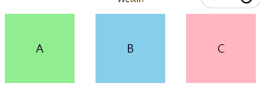
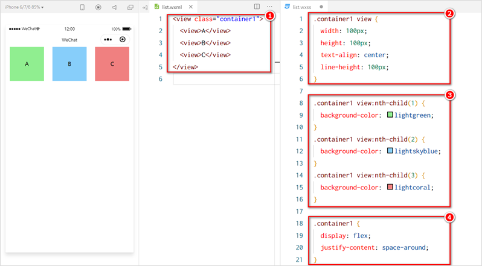
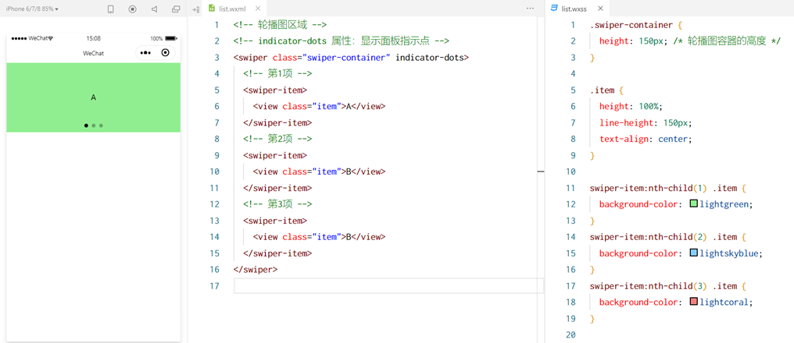

微信小程序
项目结构
- pages 用来存放所有小程序的页面
- utils 用来存放工具性质的模块（例如：格式化时间的自定义模块）
- app.js 小程序项目的入口文件
- app.json 小程序项目的全局配置文件
- app.wxss 小程序项目的全局样式文件
- project.config.json 项目的配置文件
- sitemap.json 用来配置小程序及其页面是否允许被微信索引
每个页面由四部分组成：
① .js 文件（页面的脚本文件，存放页面的数据、事件处理函数等）
② .json 文件（当前页面的配置文件，配置窗口的外观、表现等）
③ .wxml 文件（页面的模板结构文件）
④ .wxss 文件（当前页面的样式表文件）
json文件的配置
app.json
app.json 是当前小程序的全局配置，包括了小程序的所有页面路径、窗口外观、界面表现、底部 tab 等。Demo 项目里边的 app.json 配置内容如下：
①pages：用来记录当前小程序所有页面的路径
②window：全局定义小程序所有页面的背景色、文字颜色等
③style：全局定义小程序组件所使用的样式版本
④sitemapLocation：用来指明 sitemap.json 的位置
1 | { |
project.config.json 文件
project.config.json 是项目配置文件，用来记录我们对小程序开发工具所做的个性化配置，例如：
- setting 中保存了编译相关的配置
- projectname 中保存的是项目名称
- appid 中保存的是小程序的账号 ID
sitemap.json 文件
微信现已开放小程序内搜索，效果类似于 PC 网页的 SEO。sitemap.json 文件用来配置小程序页面是否允许微信索引。
1 | { |
页面json
小程序中的每一个页面，可以使用 .json 文件来对本页面的窗口外观进行配置，页面中的配置项会覆盖 app.json 的 window 中相同的配置项
新建小程序页面
在app.json添加
1 | "pages": [ |
crtl+s便出现list文件夹
修改项目首页
只需要调整 app.json -> pages 数组中页面路径的前后顺序，即可修改项目的首页。小程序会把排在第一位的页面，当作项目首页进行渲染
WXML
WXML（WeiXin Markup Language）是小程序框架设计的一套标签语言，用来构建小程序页面的结构，其作用类似于网页开发中的 HTML。
WXSS
WXSS (WeiXin Style Sheets)是一套样式语言，用于描述 WXML 的组件样式，类似于网页开发中的 CSS。
宿主环境
宿主环境（host environment）指的是程序运行所必须的依赖环境。例如：
Android 系统和 iOS 系统是两个不同的宿主环境。安卓版的微信 App 是不能在 iOS 环境下运行的，所以，Android 是安卓软件的宿主环境，脱离了宿主环境的软件是没有任何意义的！
手机微信是小程序的宿主环境
通信模型
小程序中通信的主体是渲染层和逻辑层，其中：
- WXML 模板和 WXSS 样式工作在渲染层
- JS 脚本工作在逻辑层
运行机制
小程序中的通信模型分为两部分：
渲染层和逻辑层之间的通信
由微信客户端进行转发
逻辑层和第三方服务器之间的通信
由微信客户端进行转发
启动过程：
- 把小程序的代码包下载到本地
- 解析 app.json 全局配置文件
- 执行 app.js 小程序入口文件，调用 App() 创建小程序实例
- 渲染小程序首页
- 小程序启动完成
页面渲染的过程
- 加载解析页面的 .json 配置文件
- 加载页面的 .wxml 模板和 .wxss 样式
- 执行页面的 .js 文件，调用 Page() 创建页面实例
- 页面渲染完成
组件
view
- 普通视图区域
- 类似于 HTML 中的 div，是一个块级元素
- 常用来实现页面的布局效果
1 | <view class="container"> |
1 | /* pages/list/list.wxss */ |

scroll-view
- 可滚动的视图区域
- 常用来实现滚动列表效果

swiper 和 swiper-item
- 轮播图容器组件 和 轮播图 item 组件

| 属性 | 类型 | 默认值 | 说明 |
|---|---|---|---|
| indicator-dots | boolean | false | 是否显示面板指示点 |
| indicator-color | color | rgba(0, 0, 0, .3) | 指示点颜色 |
| indicator-active-color | color | #000000 | 当前选中的指示点颜色 |
| autoplay | boolean | false | 是否自动切换 |
| interval | number | 5000 | 自动切换时间间隔 |
| circular | boolean | false | 是否采用衔接滑动 |